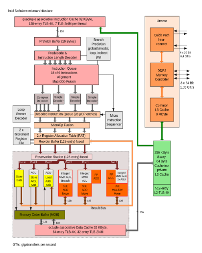

How a pencil is made
“There is not a single human being who could make a modern pencil from scratch!” This is a bold statement and a true one. A pencil consists of so many parts that there is not a single person in the world who could do it by themselves. There is wood which needs to be chopped down. The wood needs to be cut and processed in such a way that we can create around 300.000 pencils from a single tree. After that the wood needs to be filled with graphite, the graphite is mixed with clay and baked at about 815<sup>o</sup>C. This graphite is sand-witched between two pieces of our wood, glued and pressed together under a high pressure ensuring that the parts stay together. These proto-pencils are not painted but coated with four to ten layers of lacquer. As a last step we add an eraser, held onto the pencil by a metallic clasp which circles the pencil and holds the gummy substance in place by gently indenting the metal into the wood and the gum. This clasp is set with precision, without breaking the graphite, which is easily broken, and without cracking the wood.
I hope that by now you have realized that it is only possible to make a pencil because of decades of progress and discovery. It took craftsmen centuries to acquire the skills and discipline needed to craft the materials and production processes for something as seemingly simple as a pencil.
How software is made
“There is not a single human being who could create modern software from scratch!” Imagine that we would lose all technology tomorrow. I can write code, I’m fairly good at writing code but I would be nothing without a computer, an IDE and a compiler. The last two I might be able to create given the first, but a computer is not something I can build. If I’m being honest, I don’t even fully understand how a processor works. Let me show you a picture:

Imagine being handed an image like this and being told: “Your sprint backlog has been updated, you will create the Simple Decoder.” I would not even know where to start. I’d probably go to a bookstore and get the highest rated book on compilers; sit down for a week; read as much as I could; think I’d have a grasp on the subject and proceed to create the world’s worst Simple Decoder.
This is what we are asking of teams. This is what we are asking of software engineers. We are asking teams to build a small part of a larger product. Our architectural drawings are the same as the drawing we just saw of the processor. We expect teams to know what they are doing, be able to steer themselves while remaining true to the architecture and the general strategy and vision of the organisation. What we are asking teams to do, is to be true to “Create a small part of a pencil in such a way that we can mass produce all these parts, bring them together and sell the complete product to customers.”.
Like in the case with the pencils, we are asking teams to be craftsmen. They need to be proficient in the art of creating software for a specific domain. This software will be used by other teams to facilitate our business in automating their processes. To be honest, we are asking a lot of our teams: being a craftsmans takes time. Nevertheless, once you’re starting to near that pinnacle you would not stop even if you could.
Craftsmanship
It is difficult to draw a hard line of what a engineer should know and what we, as an organisation, should explain and how to best guide them. The closest I’ve come to hearing a term for this is Craftsmanship. A Craftsman does not only excel at their skill but they also know how their skill impacts the world around them. They know what is happening in their field, which problems it is facing and how to help the next generation of Craftsmen avoid the mistakes they have made. Being a Software Craftsman is not about being good at, forexample, “writing code” or “testing code”. It is about being good at “Delivering working software”.
Our community is polarised about what it means to “Deliver working software”. I can help with this debate. I want to postulate that your team is “Delivering working software” when, tomorrow, everyone can leave and the next team will have a minimal ramp-up time to continue their work. It is less about the running software and more about the quality of everything around the running software.
In order to specify the processes which need to be in place to deliver this kind of continuity, debates like: “Should we use Test Driven Development?” or: “Should we adopt pair programming and just check in on the master branch?” stem from. I don’t think there is a single Craftsman who denies that testing makes their products better. The debate is not about quality, the debate is about quality compared to speed of delivery. It is a debate which is grounded in the principals that we want to remove superfluous processes and more often than not, managers make a decision which actually only a true craftsman is able to make.
But, this debate is becoming hypothetical. Imagine that pencil and everyone needed to craft it. Now let’s postulate that tomorrow the experienced people that know how to make graphite quit; all of them! Would we want the production of pencils to stop? No, we’d want them to have trained the next generation of graphite craftsmen to take their place.
The same goes for software development. We need every developer to know how to deliver software. We are building code upon code and system upon system. We are hooking everything up to the internet, just because we can, without taking a step back and thinking about the bigger picture of what we’re creating. We’ll need to start accepting that what we create as software developers is going to be used by other software developers for a very long time to come. Realizing this should trigger us to put all our effort into creating the best software we can and to become true craftsmen.
The four pillars of craftsmanship
Craftsmanship is built on top of four pillars. In this chapter I will describe each pillar in detail.
- Be curious
- Educate peers
- Be disciplined
- Take ownership
Be curious
Curiosity is what drives innovation and improvements. If you are fully convinced that what you are doing is the most optimal way to do it and there is no more gain to be achieved; you’ve lost your curiosity. Craftsmen are never satisfied. They can be proud, they can be stubborn, they can try to disprove their competition; but they are never satisfied.
Within the concept of curiosity lies a form of hope and this is where I always focus my efforts on. We can detect things which are going wrong but we should never lose hope. Hope drives us to challenge our status quo and forces us to think of new and better ways to do what we are already doing.
With hopefulness comes enthusiasm. Hope is infectious, it spreads; but hope can also be put out. There is the downside to managing curiosity; if you are not careful you can destroy all curiosity leaving only apathy and disgruntled employees.
If you, as a Craftsman, feel cornered or afraid, if you are not challenged enough; your hope is the first thing to be put out. If you are held back and not given the opportunity to see where your mind and skills take you, your curiosity will be put out.
It takes time to light the spark of s, it takes much less to snuff it out. A craftsman is curious because they are hopeful and are not afraid to share that hope. A craftsman knows how to inspire the curiosity in others, inviting questions, encouraging challenges and rewarding the fruits of genuine curiosity.